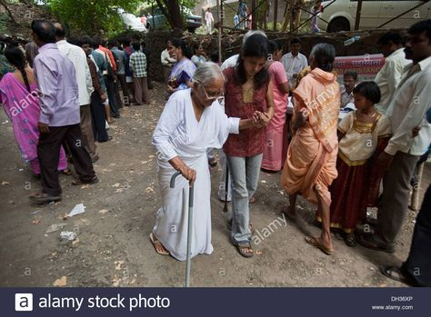
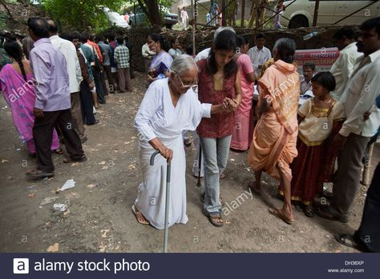

Senior Citizen Facilities
Our village community is dedicated to improving the quality of life for our senior citizens. We provide support, care, and opportunities to ensure their well-being and active participation in the community.


 

Key Services and Facilities
- Healthcare Support: Regular health check-up camps, discounted hospital treatments, and mobile health units.
- Recreational Activities: Senior clubs, weekly cultural events, games, yoga, and meditation sessions.
- Elderly Care Centers: Daycare facilities, counseling, meals, and nutrition programs.
- Pension and Financial Guidance: Assistance with pension schemes, financial literacy, and documentation.
- Home Support Services: Volunteers for home visits, assistance with chores, and delivery of essentials.
How You Can Get Involved
- Volunteer: Help with senior citizen programs and provide support.
- Donate: Contributions go towards healthcare, recreational activities, and home care services.
- Sponsor: Sponsor a senior citizen's medical or daily needs.
Upcoming Events
- Health Check-up Camp: October 15, 2024
- Senior Citizens' Day Celebration: November 1, 2024
- Yoga and Wellness Workshop: December 5, 2024
Contact Us
For more details on senior citizen facilities or to get involved, reach out at:
Phone: +123 456 789
Email: info@villagecommunity.org
Office Hours: Monday to Friday, 9 AM - 5 PM